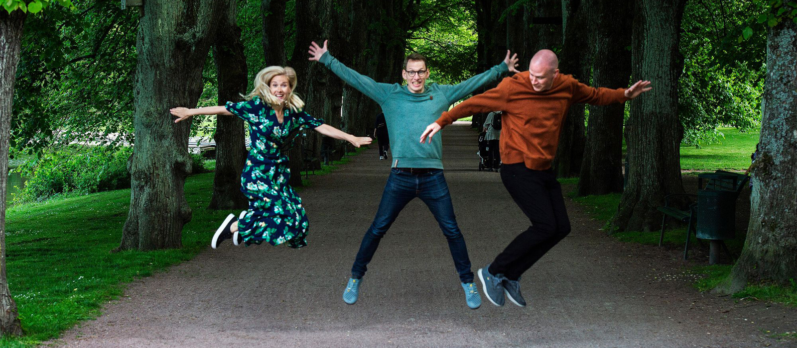

Dr Nigel Bradly is the CEO of EnviroStrat, a natural resource and sustainability advisor, and impact investment project developer. In this edited conversation with Peter Green, Nigel spoke about his journey with EnviroStrat, advice he would give to others in this space and the importance of bridging the gap between investors and sustainable project developers.

About 10 years ago, I created EnviroStrat and started doing advisory work in the natural resources and environmental sectors. I've always liked targetting areas where no-one else operates and, for me, a particularly fascinating area lies at the intersection between economics, finance, and science. As a result, EnviroStrat operates in that arena and our real value comes from our belief that being transdisciplinary is a superpower.

In recent years, EnviroStrat has started to play more of a role in impact investment. This began approximately five years ago, when we developed a green growth strategy for the Waikato region of New Zealand. In order to do this, we had to recognise the need for major investment into certain low-carbon projects. This led us to the world of impact investment, and in time, we decided to bolster our advisory work with this new capability. As a result, our method now involves creating sustainable projects, and seeking investment from other parties for the continued financing of the work. The introduction of this capability created a completely new language and mindset within the team and that's what separates EnviroStrat from other firms. There are very few organisations out there creating projects from scratch like this.
Part of the driver for me lies in my frustration at hearing other people demand that the government fix all global environmental problems. Naturally, the government should be held responsible, but a huge part of the answer lies in correctly investing private capital.
Probably the biggest thing I've learned through this process is how distant the worlds are between those who are creating projects and seeking investment and those of investing, actively seeking projects to put money in. They are often so far apart. If youcan bring those together, that's kind of soul woven for the problem. My observations are that the investment world want things that are a decent scale. They don't want to invest half a million bucks or a million bucks because the amount of effort to make the investment and follow through is about the same for a much bigger number, say 20 million. They want things that are repeatable and they want real clarity around risks and how you're going to identify and mitigate these risks. A lot of the projects that have been created are great ideas that are more in the area of social enterprise. These are often not big enough, nor mature enough in their depth of analysis, so you end up with an impasse. In these situations the money is there and the investors are desperate to invest, but the social enterprise is not ready. As a result, they don't get the money and the investors don't get the project. It's a vicious circle and that's why we're doing what we're doing.
Bridging the gap between the project developer and the investor can be an interesting challenge. It is essential that these two players engage as early as possible to understand one another, you can effectively. We've managed to recognise and adapt to this now by really understanding the mindset of the investor. Several things needs to be accounted for. For example, sometimes investors won't participate due to geographic reasons, othertimes they might be put off by non-native species, and other times the real motivating force is blue carbon. Understanding the motivations of each separate investor is a major challenge that we;ve had to overcome.

So, if we go back a step, in NZ the Maori are very heavily involved in the Marine and blue economy generally. Historically that's been fishing and aquaculture. In New Zealand, aquaculture historically is mussels, oysters and salmon. So mussels and oysters are really the main areas that Maori have been involved in. In terms of seaweed, there's been a long tradition in using seaweed for various food and health benefits. So there's a long cultural association with different seaweeds and in different places, and their uses. However, that's separate from Maori as an economic development context. In New Zealand we're seeing an increase in tribes looking at aquaculture as a real economic development opportunity. Some of the tribes have been quite active. However, a lot of tribes aren't and they see real potential there. In the case of seaweed, considering that there is no functioning seaweed sector here, we have the opportunity to create a sector that is as baking in those Maori principles, ethic and ways of doing business and life right from the outset. A project that we've just kicked off at the moment is working with a number of tribes here to pilot the farming of the seaweed, but also training Maori youth in particular, but helping train the tribes that are participating in the pilot. Later, as we scale up beyond that, the seaweed sector is able to become an integral part of the broader aquaculture sector.
The advice would I give to my younger self would be to be as multidisciplinary as possible. I studied environmental science at university, but I would have liked to study other subjects too like finance or economics. That's because the language from these subjects influences the way you understand things and that's really important. At the end of the day, you will likley learn this stuff throughout your lifetimes, however, that notion of being willing to learn completely new things is so critical.
In addition, in this sector of work, you've got to be pretty risk tolerant. Understanding risk and having the willingness and ability to take risks is important. In addition, finding one or two people who can inspire you, and mentor you in some way can be very important. I've been lucky in my career to have two or three examples of that and

So the Tim Flannery seaweed book sunlight and seaweed is good. Yeah, I read that. That was the first time I'd ever even contemplated blue carbon. Or even thought at all really about about seaweed. That was interesting. Brynn Smith, he like a fish. Do you know brain? "How to Avoid a Climate Disaster"